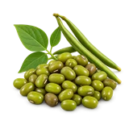

होम / मूंग

मूंग का भाव आज | Moong Mandi Price Today
मूंग के आज के उपलब्ध मंडी भाव देखें—नागौर, मेड़ता, जयपुर (बस्सी) और जोधपुर के मॉडल, न्यूनतम और अधिकतम रेट।
नीचे मंडी-वार सूची में मूंग के उपलब्ध भाव दिए हैं। मंडी के नाम पर क्लिक करके उस मंडी की दूसरी फसलों के भाव भी देख सकते हैं।
राम-राम किसान भाईयों! मूंग दलहन की एक महत्वपूर्ण फसल है। कम समय में तैयार होने वाली और कम पानी में भी अच्छी पैदावार देने के कारण बहुत से किसान भाई इसे अपनी खेती का हिस्सा बनाते हैं। लेकिन मंडी में मूंग का सही भाव पाना केवल किस्मत का खेल नहीं, बल्कि सही जानकारी और तैयारी का परिणाम है। आइए, मूंग के बाज़ार को करीब से समझते हैं।
मंडी में सही भाव कैसे पाएं?
व्यापारी मूंग को देखते ही भांप लेते हैं कि माल कैसा है। अगर आप चाहते हैं कि आपको बाज़ार का सबसे ऊँचा दाम मिले, तो तीन बातों का ध्यान रखें: नमी (10-12% से कम), दाने की चमक, और सफाई। जो मूंग अच्छी तरह धूप में सुखाई गई हो, उसे व्यापारी हमेशा प्रीमियम भाव देते हैं। बेचने से पहले अपनी मूंग की ग्रेडिंग खुद करें—साफ और बोल्ड दाने का दाम हमेशा छंटाई न किए हुए माल से 200-500 रुपये प्रति क्विंटल ज्यादा होता है।
उन्नत किस्में और पैदावार
किसान भाई अक्सर पूछते हैं कि कौन सी किस्म बोएं? आज के दौर में सम्राट, गंगा-8, और पूसा जैसी किस्में अपनी पैदावार और रोग-प्रतिरोधक क्षमता के लिए जानी जाती हैं। व्यापारी भी उन्हीं किस्मों को ज्यादा पसंद करते हैं जिनका छिलका पतला और दाना चमकदार होता है। किस्म का चयन अपनी मिट्टी और मौसम के हिसाब से करें, क्योंकि अच्छा दाना मतलब सीधा मुनाफे में बढ़ोतरी।
बाज़ार का ट्रेंड: तेज़ी कब आएगी?
लोग पूछते हैं—"मूंग का भाव आगे क्या होगा?" भाई, बाज़ार में दो ही चीज़ें चलती हैं—आवक और दाल मिलों की मांग। जब सीजन की शुरुआत में भारी मात्रा में मूंग मंडियों में पहुँचती है, तो शुरुआत में थोड़े दबाव के कारण भाव कम हो सकते हैं। लेकिन जैसे-जैसे आवक कम होती है और दाल मिलों व निर्यातकों की मांग बढ़ती है, भाव में तेज़ी आने लगती है। हमेशा अपने नज़दीकी बड़े केंद्रों के भावों पर नज़र रखें, वहां का ट्रेंड बाज़ार की दिशा बताता है।
MSP और सरकारी खरीद का लाभ
मूंग के लिए सरकार द्वारा घोषित न्यूनतम समर्थन मूल्य (MSP) हमारे लिए एक सुरक्षा घेरा है। अगर बाज़ार में भाव बहुत गिर जाए, तो घबराना नहीं है। सरकारी खरीद केंद्रों (NAFED) पर पंजीकरण कराकर आप अपना माल MSP पर बेच सकते हैं। एक जागरूक किसान के तौर पर हमेशा बेचने से पहले बाज़ार भाव और सरकारी MSP की तुलना ज़रूर करें।
भंडारण में सावधानी
अक्सर हम भाव बढ़ने के इंतज़ार में मूंग घर पर स्टॉक कर लेते हैं। यहाँ एक बात ज़रूर ध्यान रखें—भंडारण करते समय अगर नमी रह गई, तो घुन या कीड़े लगने का खतरा बना रहता है। नीम की पत्तियों का इस्तेमाल करें या एयर-टाइट बैग्स में रखें। बिना क्वालिटी के स्टोरेज से भाव बढ़ना तो दूर, माल की कीमत ही गिर जाती है।
खेती करना मेहनत का काम है, लेकिन सही समय पर सही मंडी में फसल बेचना बुद्धिमानी का। याद रखें, आपकी मूंग की चमक ही आपकी मेहनत की असल पहचान है। अगली बार मंडी जाने से पहले इस पेज को चेक करें और अपनी फसल का पूरा हक पाएं।
अक्सर पूछे जाने वाले सवाल
मूंग के भाव क्या हैं?
मूंग के उपलब्ध नवीनतम भाव हर दिन मंडी की आवक और फसल की गुणवत्ता के आधार पर बदलते रहते हैं। आज के मूंग के उपलब्ध नवीनतम (न्यूनतम और अधिकतम) भाव जानने के लिए कृपया इसी पेज पर ऊपर दी गई टेबल देखें। हम किसानों और व्यापारियों की सुविधा के लिए source से रोज़ाना उपलब्ध नए रिकॉर्ड के अनुसार हमारी वेबसाइट पर मूंग और अन्य सभी प्रमुख फसलों के उपलब्ध भाव अपडेट करते हैं।
मूंग का भाव क्या है?
अगर आप आज का ताज़ा मूंग का भाव जानना चाहते हैं, तो इसकी पूरी जानकारी ऊपर लिस्ट में दी गई है। मूंग की क्वालिटी (हल्का, मीडियम या बढ़िया) और मंडियों में उसकी डिमांड के हिसाब से हर दिन कीमतों में उतार-चढ़ाव देखने को मिलता है। हमने इसी पेज पर ऊपर की तरफ जो टेबल दी है, उसमें मूंग के आज के सबसे सटीक और उपलब्ध भाव दर्ज किए गए हैं, ताकि किसानों और व्यापारियों को तुरंत सही जानकारी मिल सके। कृपया आज का मंडी रेट देखने के लिए पेज को थोड़ा ऊपर की ओर स्क्रॉल करें।
आज मध्य प्रदेश में मूंग मंडी भाव क्या है?
मध्य प्रदेश की अलग-अलग मंडियों में मूंग का भाव अलग होता है। उपलब्ध मंडीवार भाव ऊपर दी गई तालिका में देखें।
Moong ka bhav near me
यह पेज आपकी location अपने-आप नहीं लेता। ऊपर दी गई मंडीवार तालिका में अपने नज़दीक की मंडी चुनकर मूंग का भाव देखें।
Moong ka Bhav today Rajasthan
राजस्थान की अलग-अलग मंडियों में मूंग का भाव अलग होता है। उपलब्ध मंडीवार भाव ऊपर दी गई तालिका में देखें।
Moong price today in Rajasthan mandi
राजस्थान की अलग-अलग मंडियों में मूंग का भाव अलग होता है। उपलब्ध मंडीवार भाव ऊपर दी गई तालिका में देखें।
मूंग का क्या भाव चल रहा है?
नई और पुरानी मूंग की आवक के आधार पर मंडियों में इसका कारोबार चल रहा है। बढ़िया क्वालिटी (दानेदार और साफ माल) की मूंग के दाम बाजार में मजबूत बने हुए हैं, जबकि हल्की नमी वाले माल के भाव में थोड़ा अंतर देखने को मिलता है। अपनी नजदीकी मंडी के सटीक उपलब्ध भाव जानने के लिए ऊपर दी गई लिस्ट चेक करें।